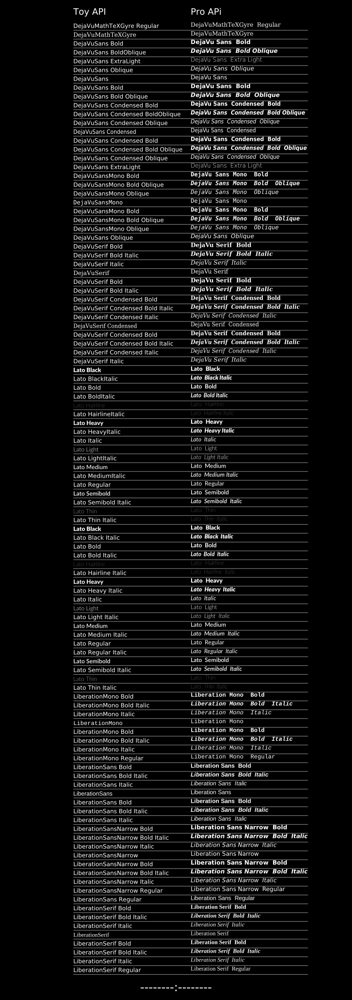

Fonts available on Linux CI systems
When this document is built on Github CI, the following fonts were available.
Code for this figure
This code generates the figure below.
using Luxorfonts = [ "DejaVuMathTeXGyre Regular", "DejaVuMathTeXGyre", "DejaVuSans Bold", "DejaVuSans BoldOblique", "DejaVuSans ExtraLight", "DejaVuSans Oblique", "DejaVuSans", "DejaVuSans Bold", "DejaVuSans Bold Oblique", "DejaVuSans Condensed Bold", "DejaVuSans Condensed BoldOblique", "DejaVuSans Condensed Oblique", "DejaVuSans Condensed", "DejaVuSans Condensed Bold", "DejaVuSans Condensed Bold Oblique", "DejaVuSans Condensed Oblique", "DejaVuSans ExtraLight", "DejaVuSansMono Bold", "DejaVuSansMono Bold Oblique", "DejaVuSansMono Oblique", "DejaVuSansMono", "DejaVuSansMono Bold", "DejaVuSansMono Bold Oblique", "DejaVuSansMono Oblique", "DejaVuSans Oblique", "DejaVuSerif Bold", "DejaVuSerif Bold Italic", "DejaVuSerif Italic", "DejaVuSerif", "DejaVuSerif Bold", "DejaVuSerif Bold Italic", "DejaVuSerif Condensed Bold", "DejaVuSerif Condensed Bold Italic", "DejaVuSerif Condensed Italic", "DejaVuSerif Condensed", "DejaVuSerif Condensed Bold", "DejaVuSerif Condensed Bold Italic", "DejaVuSerif Condensed Italic", "DejaVuSerif Italic", "Lato Black", "Lato BlackItalic", "Lato Bold", "Lato BoldItalic", "Lato Hairline", "Lato HairlineItalic", "Lato Heavy", "Lato HeavyItalic", "Lato Italic", "Lato Light", "Lato LightItalic", "Lato Medium", "Lato MediumItalic", "Lato Regular", "Lato Semibold", "Lato Semibold Italic", "Lato Thin", "Lato Thin Italic", "Lato Black", "Lato Black Italic", "Lato Bold", "Lato Bold Italic", "Lato Hairline", "Lato Hairline Italic", "Lato Heavy", "Lato Heavy Italic", "Lato Italic", "Lato Light", "Lato Light Italic", "Lato Medium", "Lato Medium Italic", "Lato Regular", "Lato Regular Italic", "Lato Semibold", "Lato Semibold Italic", "Lato Thin", "Lato Thin Italic", "LiberationMono Bold", "LiberationMono Bold Italic", "LiberationMono Italic", "LiberationMono", "LiberationMono Bold", "LiberationMono Bold Italic", "LiberationMono Italic", "LiberationMono Regular", "LiberationSans Bold", "LiberationSans Bold Italic", "LiberationSans Italic", "LiberationSans", "LiberationSans Bold", "LiberationSans Bold Italic", "LiberationSans Italic", "LiberationSansNarrow Bold", "LiberationSansNarrow Bold Italic", "LiberationSansNarrow Italic", "LiberationSansNarrow", "LiberationSansNarrow Bold", "LiberationSansNarrow Bold Italic", "LiberationSansNarrow Italic", "LiberationSansNarrow Regular", "LiberationSans Regular", "LiberationSerif Bold", "LiberationSerif Bold Italic", "LiberationSerif Italic", "LiberationSerif", "LiberationSerif Bold", "LiberationSerif Bold Italic", "LiberationSerif Italic", "LiberationSerif Regular",]function drawfonts() d = @drawsvg begin background("black") @layer begin translate(-150, 0) sethue("white") tableheader = Table([5], [400, 400], boxtopcenter() + (0, 50)) fontsize(30) text("Toy API", tableheader[1]) text("Pro APi", tableheader[2]) table = Table(fill(30, length(fonts)), [400, 400]) fsize = 20 fontsize(fsize) n = 1 for font in fonts @layer begin fontface(font) text(font, table[n]) end @layer begin fface = replace(font, "Serif" => " Serif", "Bold" => " Bold", "Semibold" => " Semibold", "Black" => " Black", "Heavy" => " Heavy", "Medium" => " Medium", "Light" => " Light", "Thin" => " Thin", "Hairline" => " Hairline", "Narrow" => " Narrow", "Regular" => " Regular", "Sans" => " Sans", "Mono" => " Mono", "Italic" => " Italic", "Oblique" => " Oblique", "Condensed" => " Condensed", "Extra" => " Extra", "-" => " ", ) setfont(fface, fsize) settext(fface, table[n+1]) end @layer begin setopacity(0.5) line(table[n] + (0, 8), table[n+1] + (table.colwidths[2], 8), :stroke) end n += 2 end end sethue("white") fontsize(40) text("--------:--------", boxbottomcenter() + (0, -30), halign=:center) end 1200 3400 return denddrawfonts()